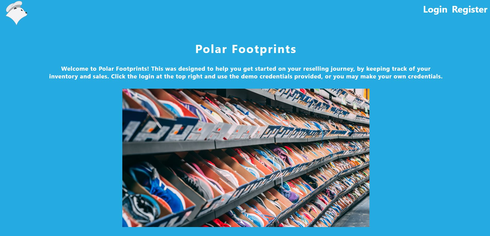
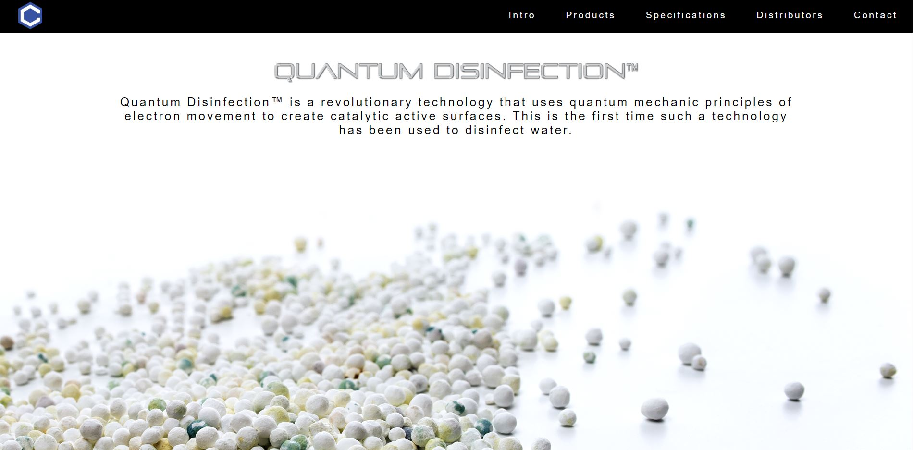

About
Enthusiastic chemist turned web developer that thrives through problem-solving and critical thinking. Can succeed independently or through collaborative teamwork through execution of educational knowledge and accumulated experiences. During my free time I enjoy solving daily puzzles, cooperating with teammates, clearing objectives and developing a business venture through the sneaker market.
Projects
Polar-Footprint
An application that helps users keep track of inventory, so that you can better manage your time, money, and stock.
React | CSS | Node | Express | PostgreSQL
Client Repo Server RepoClaire-App
An application that showcases Claire Technologies three main products and specifications.
React | CSS | Node | Express | PostgreSQL
Client Repo Server Repo
Skills
- HTML
- CSS
- JavaScript
- jQuery
- Node.js
- React
- Git
- Github
- Express
- PostgreSQL
- Heroku
- Zeit